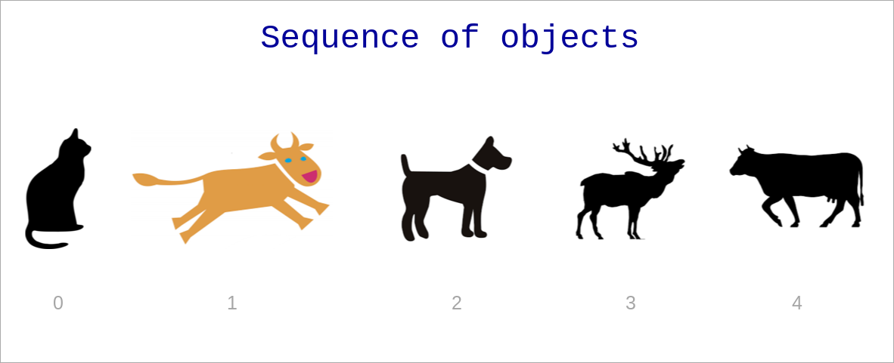

Sequence Data Types
(Basic data structures)
Created for.

Sequence Data Types - Overview
Sequence Data Types - Overview
What is a Sequence?
A sequence in Python is a container, storing ordered collection of objects.
{kind=link}
What is a Sequence?
- The position number of an item in a sequence is called index.
- Indexes starts counting from 0.
- All sequence data type in Python supports common sequence operations.
length, indexing, slicing, concatenation,.
repetition, membership test, min, max, count, index- Each sequence data type has also own methods for performing specific operations.
What is a Sequence?

What is a Sequence? - examples
# list:
fruits = ["apple", "banana", "strawberry", "banana", "orange"]
# tupple:
point3d = (4, 0, 3)
# range:
digits = range(0,10)
# string:
user_name="ada byron"
- The Sequence Data Types in Python are:
- Lists.
- Tuple.
- Range.
- Strings are also considered as a sequence.
Lists
Lists
What is a List?
- A list is a mutable (i.e. changeable) sequence of objects.
- we can add or delete elements to the list.
- Lists, being mutable sequence, can grow or shrink.
- There is no restriction of the type of the objects being in a list.
- The objects in a list can repeat many times.
- Lists are general-purpose data structure.
Create list by literal
- A List literal is denoted by a square brackets
- Items in the list are separated by comma
### create empty list:
empty_list = []
### create list of numbers:
users = [1,2,3,4,5]
### create list of lists
matrix = [
[1,2,3],
[4,5,6],
[7,8,9]
]
Retrieve item from list
var_name = list_name[index]
### create list:
fruits = ["apple", "banana", "strawberry", "banana", "orange"]
### retrieve the first item in the list:
item1 = fruits[0]
# apple
### retrieve third item in the list.
item3 = fruits[2]
# strawberry
# retrieve last item in the list:
itemN = fruits[-1]
# orange
We will discuss more indexing operation in Common Sequence Operations.
Change list item
list_name[index] = value
### create list:
fruits = ["apple", "banana", "strawberry"]
### Change second list item
fruits[1] = "plum"
print( fruits )
# ['apple', 'plum', 'strawberry']
### Change last list item
fruits[-1] = "orange"
print( fruits )
# ['apple', 'plum', 'orange']
Tuples
Tuples
What is a Tuple?
- A tuple is immutable (i.e. not changeble) sequence of data.
- once created a tuple can not be changed! No grow or shrink can happens.
- Useful for fixed data.
- Tuples are faster than lists and consumes less memory, but they are not general-purpose.
Create tuple from literal
- Tuple literal is denoted by parentheses
- Items in the tuple are separated by comma
### create empty tuple:
empty = ()
print( empty )
# ()
### create tuple with one element - note the trailing comma!
# if you write t = (99), t will be an integer, not tuple
t = (99,)
print(t)
# (99,)
### create tuple of 3 elements:
point3d = (4, 0, 3)
print(point3d)
# (4, 0, 3)
Retrieve item from tuple
var_name = tupple_name[index]
### retrieve tuple items
address = ('Bulgaria', 'Sofia', 'Nezabravka str', 14)
country = address[0]
town = address[1]
street = address[2]
street_num = address[3]
print(country, town, street, street_num)
# Bulgaria Sofia Nezabravka str 14
Change tuple? No Way!
- Tuples are immutable and can not be changed!
### change a tuple item:
address[0] = "France"
# TypeError: 'tuple' object does not support item assignment
Examples
### create tuple with 3 elements:
ada_birth_date = (10, "December", 1815)
# retrieve tuple elements:
ada_birth_day = ada_birth_date[0]
ada_birth_month = ada_birth_date[1]
ada_birth_year = ada_birth_date[2]
print("Ada is born on {} {} in {}".format(ada_birth_month, ada_birth_day, ada_birth_year))
# Ada is born on December 10 in 181
Lists vs Tuples
Lists vs Tuples
- Performance
- Tuples requires less memory and are faster than lists
- Usage
- Use list, when you want to add/remove/change items in the list
- Use tuple, when you want to preserve your data from being changed. Or when you need to optimize your program.
Range Object
Range Object
What is a Range Object?
- The range type represents an immutable sequence of numbers.
- It's used to generate a number sequence, limited between pre-given start and stop integer values.
- It's typical use in Python is with
forloops. - Reference: ranges @python3 docs
Syntax
range(stop)
range(start, stop[, step])
- start is optional and if omitted defaults to 0
- step is optional and if omitted defaults to 1.
- start, stop and step must be integers!
- step can't be 0 (or "ValueError" is raised)
- The range of generated integers will end at stop - 1.
- If the given arguments did not form a sequence, an empty sequence will be returned.
Examples
range(0,10)
# generates the sequence: [0, 1, 2, 3, 4, 5, 6, 7, 8, 9]
range(10)
# same as above
range(2, 10, 2)
# generates the sequence: [2, 4, 6, 8]
range(9, -1, -1)
# generates the sequence: [9, 8, 7, 6, 5, 4, 3, 2, 1, 0]
range(-3, 4)
# generates the sequence: [-3, -2, -1, 0, 1, 2, 3]
range(9, -1, 1)
# incorrect sequence formulae, will return empty sequence
Range in for: example 1
### iterate from 0 up to 10, step = 1 (default)
for i in range(10):
print(i, end=" ")
# 0 1 2 3 4 5 6 7 8 9
Range in for: example 2
### iterate from 10 up to -1, step = -1
for i in range(10,-1, -1):
print(i, end=" ")
# 10 9 8 7 6 5 4 3 2 1 0
Range in for: example 3
### iterate from 2 up to 10, step = 2
for i in range(2, 10, 2):
print(i, end=" ")
# 2 4 6 8
Range in for: example 4
### iterate from -10 up to 0, step = 2
for i in range(-10, 0, 2):
print(i, end=" ")
# -10 - 8 - 6 - 4 - 2
Common Sequence Operations
Common Sequence Operations
Next operation can be used on all sequence types, with the exception that range() objects can not be concatenated or repeated (but the sequences they produced can).
| Operation | Operator |
|---|---|
| Concatenation | + |
| Repetition | * |
| Membership Testing | in (not in) |
| Indexing | [i] |
| Slicing | [i:j] |
Concatenation +
- Concatenate two sequences and return the resulting sequence
- Only srings, lists and tuples support the concatenation operation.
- ranges can not be concatenated.
### Let's have two lists:
fruits = ["apple", "banana", "strawberry"]
numbers = [1,2,3]
### We can concatenate them:
concat_list = fruits + numbers
print(concat_list)
# ['apple', 'banana', 'strawberry', 1, 2, 3]
Concatenation - lists example
num_list = [1,2,3]
alpha_list = ["a", "b", "c"]
conc_list = num_list + alpha_list
print(conc_list)
# [1, 2, 3, 'a', 'b', 'c']
Note, that the result is a list!
Concatenation - tuples example
date1 = (31, "December", 2017)
date2 = (10, "Mart", 1999)
conc_date = date1 + date2
print(conc_date)
Note, that the result is a tuple!
Repetition *
- Repeats a sequence a given number of times and return the resulting sequence
- The multiplier must be an integer value!
- Only srings, lists and tuples support the repetition operation.
- ranges can not be repeated.
### Let's have a list:
numbers = [1, 2, 3]
### Repetition
rep_list = numbers * 3
print(rep_list)
# [1, 2, 3, 1, 2, 3, 1, 2, 3]
Repetition - example
num_list = [1, 2, 3]
alpha_list = ["a", "b", "c"]
print(num_list*3)
print(alpha_list*3)
# [1, 2, 3, 1, 2, 3, 1, 2, 3]
# ['a', 'b', 'c', 'a', 'b', 'c', 'a', 'b', 'c']
Membership Testing in, not in
- x in sequence
- returns True if x is member of sequence
- returns False if x is NOT member of sequence
- x not in sequence
- returns True if x is NOT member of sequence
- returns False if x is member of sequence
Membership Testing - list example
### Let's have two list:
fruits = ["apple", "banana", "strawberry"]
numbers = [1, 2, 3]
### Membership Testing (in):
print("banana" in fruits)
# True
print("banana" in numbers)
# False
### Membership Testing (not in):
print("banana" not in fruits)
# False
print("banana" not in numbers)
# True
Membership Testing - range example
# Let's have a range:
r = range(0,10)
print(3 in r)
# True
print(21 in r)
# False
Indexing from start to end

- First sequence item is with index 0.
- Next sequence item indexes increments with 1
Indexing from start to end - example
### create list of numbers:
numbers = [1,2,3,4,5]
### index from start to end:
print(numbers[0],numbers[1],numbers[2],numbers[3],numbers[4])
# 1 2 3 4 5
Indexing from end to start

- Last list item is with index -1
- Next sequence item indexes decrements with 1
Indexing from end to start - example
### create list of numbers:
numbers = [1,2,3,4,5]
### index from end to start:
print(numbers[-1],numbers[-2],numbers[-3],numbers[-4],numbers[-5])
# 5 4 3 2 1
Indexing from end to start - use case
- The pythonic way to get the last element of a sequence is by using the
-1index, not bylen()-1
fruits = ["apple", "banana", "strawberry"]
# the pythonic way to print last element
print(fruits[-1])
# "strawberry"
# not pythonic (though it works):
print(fruits[len(fruits)-1])
# "strawberry"
Slicing - syntax
sliced = sequence[start:end:step]
- Slice a sequence from start to stop with the given step
- start, end and step are optional!
- At least one column (
:) is required!
a[start:end] # get items from start through end-1
a[start:] # get items from start through the rest of the array
a[:end] # get items from the beginning through end-1
a[:] # a copy of the whole array
Reference: slice @python docs
Examples
>>> str = "abcdef"
>>> str[2:3]
'c'
>>> str[2:4]
'cd'
>>> str[-1:2:-1]
'fed'
>>> str[-1::-1]
'fedcba'
# same, but ugly:
>>> str[-1:-7:-1]
'fedcba'
>>> str[]
SyntaxError: invalid syntax
Examples
>>> str = "abcdef"
>>> str[:]
'abcdef'
>>> str[:3]
'abc'
>>> str[3:]
'def'
>>> str[::2]
'ace'
>>> str[::-1]
'fedcba'
Slicing "multi-dimensional" lists
- Normal Python lists are single-dimensional, though they can look like multi-dim lists if their elements are lists
- I.e. Python did not support syntax to slice columns from "multi dim" looking list
m = [
[1,2,3],
[4,5,6],
[7,8,9],
]
# trying to slice the second column ([1,5,8]):
print(m[:,1])
# TypeError: list indices must be integers or slices, not tuple
Slicing multi-dimensional arrays
- But the package numpy contains powerful N-dimensional array objects and other numerical operations.
- In order to use it, you need to install it first:
pipenv install numpy
import numpy
# lets create a python list
m = [
[1,2,3],
[4,5,6],
[7,8,9],
]
# create a numpy array from that list:
arr = numpy.array(m)
# now we can easily use numpy's multi-dim slicing:
print(arr[:,1])
#[2 5 8]
print(type(arr[:,1]))
Loop on sequence
Loop on sequence
Syntax
for item in sequence:
# do something with item
### loop on list items:
for item in [1,2,3]:
print(item)
### loop on tuple items:
for item in (10, "December", 1985):
print(item)
### loop on string items:
for item in "byron":
print(item)
### loop on range items:
for item in range(1,3):
print(item)
Loop on indexes of sequence: C-style
- As we saw, Python doesn't have C-style for loop, but we can emulate it with:
user_name = "ivan"
for i in range(len(user_name)):
print("{} - {}".format(i, user_name[i]))
0 - i
1 - v
2 - a
3 - n
Loop on indexes of sequence: Pythonic way
- To get the index and the item in a
forloop, we can also use the enumerate() built-in function:
for i,l in enumerate(user_name):
print("{} - {}".format(i, l))
0 - i
1 - v
2 - a
3 - n
More on lists
More on lists
Create list from sequence: list()
- With
list()function we can create a list from any sequence:
### list from tupple:
point3d = (4, 0, 3)
point3d_list = list(point3d)
print(point3d_list)
# [4, 0, 3]
### list from range:
digits = range(0, 10)
digits_list = list(digits)
print(digits_list)
# [0, 1, 2, 3, 4, 5, 6, 7, 8, 9]
### list from string:
user_name = "ada byron"
user_name_list = list(user_name)
print(user_name_list)
# ['a', 'd', 'a', ' ', 'b', 'y', 'r', 'o', 'n']
Other List Operations
fruits = ["apple", "orange", "strawberry"]
### Delete a list item by index
del fruits[1]
print(fruits)
# ['apple', 'strawberry']
Basic List Methods
### Create list of fruits:
fruits = ["apple", "banana", "strawberry"]
### Appends item the end of the list:
fruits.append("plum")
print(fruits)
# ['apple', 'banana', 'strawberry', 'plum']
### Insert item in specified position (by the index given as first parameter)
fruits.insert(2, "NEW")
print(fruits)
# ['apple', 'banana', 'NEW', 'strawberry', 'plum']
### Retrieve the item at the end and remove it from the list:
item = fruits.pop()
print(item, fruits)
# plum ['apple', 'banana', 'NEW', 'strawberry']
### Retrieve the item at the index given and remove it from the list:
item = fruits.pop(2)
print(item, fruits)
# NEW ['apple', 'banana', 'strawberry']
### Remove the first item from a list by the given value:
fruits.remove("banana")
print(fruits)
# ['apple', 'strawberry']
### Reverse the items of a list in place:
fruits.reverse()
print(fruits)
# ['strawberry', 'banana', 'apple']
For more - check the: python.org tutorial
Lists of lists
- A list item can be any data type, including list, tuples and so on.
### create list of lists:
matrix = [
[1,2,3],
[4,5,6],
[7,8,9],
]
### retrieve the first element from the first list:
print(matrix[0][0] )
# 1
### retrieve the last element from the first list:
print(matrix[0][-1])
# 3
### retrieve the first element from the last list:
print(matrix[-1][0])
# 7
### retrieve the last element from the last list:
print(matrix[-1][-1])
# 9
List of tuples
### create list_of_tuples:
points = [
(1,2),
(3,4),
(5,6)
]
### retrieve the first element from the first tuple:
print(points[0][0])
# 1
### retrieve the last element from the first tuple:
print(points[0][-1])
# 2
### retrieve the first element from the last tuple:
print(points[-1][0])
# 5
### retrieve the last element from the last tuple:
print(points[-1][-1])
# 6
More on tuples
More on tuples
Create tuple from sequence: tuple()
- With
tuple()function we can create a tuple from any sequence:
### tuple from list:
fruits = ["apple", "banana", "strawberry", "banana", "orange"]
fruits_tuple = tuple(fruits)
print(fruits_tuple)
# ('apple', 'banana', 'strawberry', 'banana', 'orange'
### tuple from range:
digits = range(0, 10)
digits_tuple = tuple(digits)
print(digits_tuple)
# (0, 1, 2, 3, 4, 5, 6, 7, 8, 9)
### tuple from string:
user_name = "ada byron"
user_name_tuple = tuple(user_name)
print(user_name_tuple)
# ('a', 'd', 'a', ' ', 'b', 'y', 'r', 'o', 'n')
Change mutable item inside tuple? Yes!
- Tuple items can not be changed!
- If a tupple item is list - it will always be a list
- But, we can change the items inside a list!
Change mutable item inside tuple? - example
users = (
["Ivan", "Ivanov", 34],
["Maria", "Ivanova", 36],
["Asen", "Asenov", 20],
)
### try to change items inside a mutable tuple item:
users[0][2] = 100
print(users[0])
# ['Ivan', 'Ivanov', 100]
### try to change a tupple item:
users[0] = ["Petyr", "Petrov", 45]
# TypeError: 'tuple' object does not support item assignment
Resources
Resources
Exercises
Exercises
Task 1 [task_1.py]
- Given are two lists of names:
first_nameswith items "ivan", "maria", "petar"sur_nameswith items "ivanov", "popova", "petrov"- Write a program which will make a third list:
names, which will holds the items from the two l[task_1.py][task_1.py]ist above as given:
print(names)
# ['ivan', 'maria', 'petar', 'ivanov', 'popova', 'petrov']
Task 2 [task_2.py]
- Given are two lists
first_namesandsur_namesas in previous task. - From
first_namesandsur_namescreate a third list: nameswhich will hold the items from the two list with next order:
print(names)
# ['ivan', 'ivanov', 'maria', 'popova', 'petar', 'petrov']
Task 3 [task_3.py]
- Write a program which will prints out the sum of the all even numbers in the interval 1000, 1200 (both included).
111100
Task 4 [task_4.py]
Given are next list of words:
words = ["dog", "talent", "loop", "aria", "tent", "choice"]
Write a program which will find and output all of the words which starts and ends with same letter
Words which starts and end with same letter are:
talent
aria
tent
Task 5 [task_5.py]
- Write a program which will ask the user to enter N names. N is also entered by the user, after respective prompt.
- The names entered by the user, should be stored in a list
namesand will be printed to output. - Here is how your program should behave:
How many names are you going to enter? 3
Enter a name, please: Maria
Enter a name, please: Ivan
Enter a name, please: Stoyan
******************************
The names you've entered are:
Maria
Ivan
Stoyan
Task 6 [task_6.py]
Given are next list of distances from Sofia:
distances_from_sofia = [
("Bansko", 97),
("Brussels", 1701),
("Alexandria", 1403),
("Nice", 1307),
("Szeged", 469),
("Dublin", 2479),
("Palermo", 987),
("Moscow", 1779),
("Oslo", 2098),
("London", 2019),
("Madrid", 2259),
]
Task 6 - page 2
Write a program, which will outputs only the distances from Sofia which are bellow 1500km
Distances bellow 1500km from Sofia are:
Bansko - 97
Alexandria - 1403
Nice - 1307
Szeged - 469
Palermo - 987
Task 6 - advanced
Using the sorted() function explained in Sorting HOW TO, output the sorted lists of filtered distances in ascending order:
Bansko - 97
Szeged - 469
Palermo - 987
Nice - 1307
Alexandria - 1403
Submission
- Please, prefix your filenames/archive with your name initials, before sending.
- For instance: iep_task1.py or iep_tasks.rar
- Send files to progressbg.python.course@gmail.com
These slides are based on.
customised version of .
framework.